Vision Star
Brand Integration Strategy
Brand Integration Intern
Developed branded short-form drama strategies by combining market analysis, creative storytelling, and campaign execution.
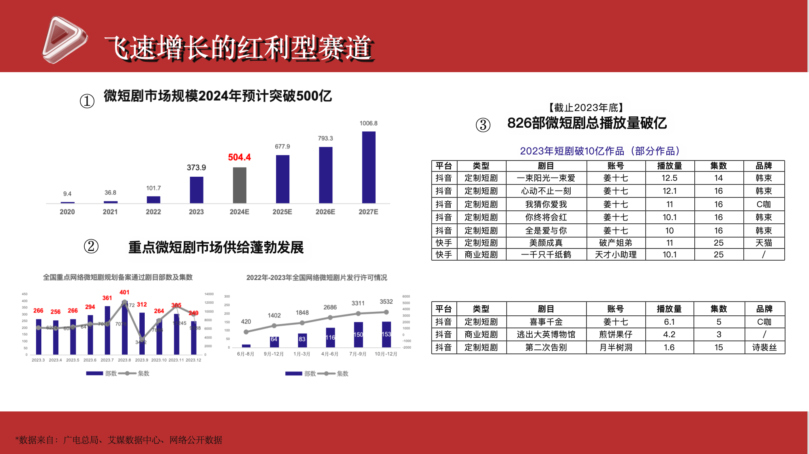
Project Overview
Role
Brand Integration Intern
Focus
Short-form Drama Marketing
Brand Integration Strategy
Content Planning
Campaign Execution
Deliverables
Market Analysis
Creative Integration Proposals
Campaign Recommendations
02.1 Short-form Drama Market Analysis
Identifying growth opportunities and brand integration potential within China's rapidly expanding short-form drama ecosystem.
Market Growth
Analyzed the rapid expansion of China's short-form drama market, including industry growth, audience scale, and commercialization opportunities.
Competitive Landscape
Reviewed existing brand collaborations across beauty, food, lifestyle, and home appliance categories to identify emerging integration models.
Strategic Opportunity
Identified opportunities for home appliance brands to move beyond product exposure through scenario-based storytelling.
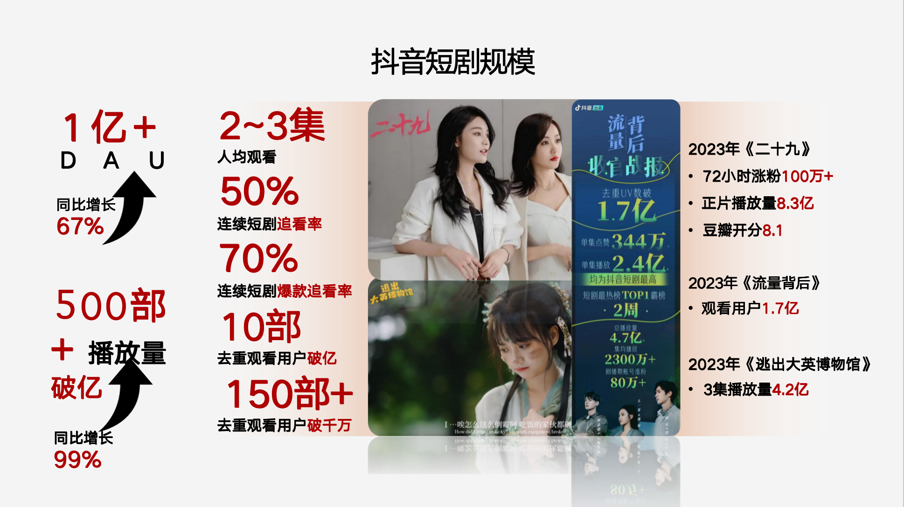
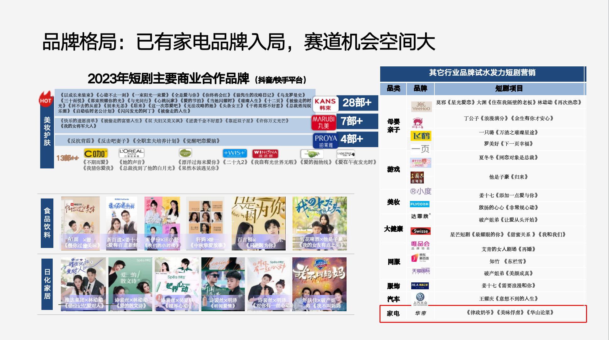
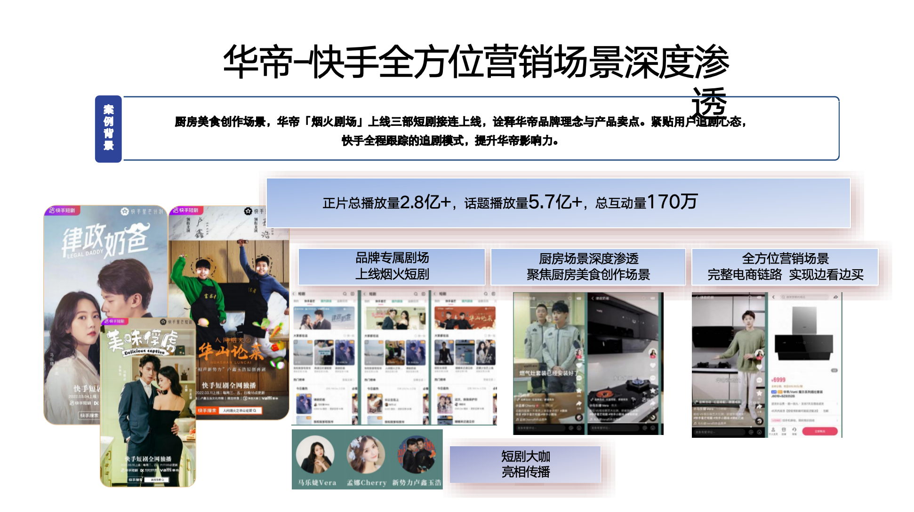
02.2 Brand Integration Strategy & Creative Development
Translating brand objectives into storytelling solutions through content selection, creative development, and integration planning.
Content & Audience Matching
Evaluated drama themes, audience profiles, and creator characteristics to identify suitable integration opportunities.
Creative Concept Development
Developed product placement ideas by embedding brand benefits naturally into character settings and storylines.
Campaign Planning
Supported collaboration workflows including proposal development, communication alignment, and execution preparation.
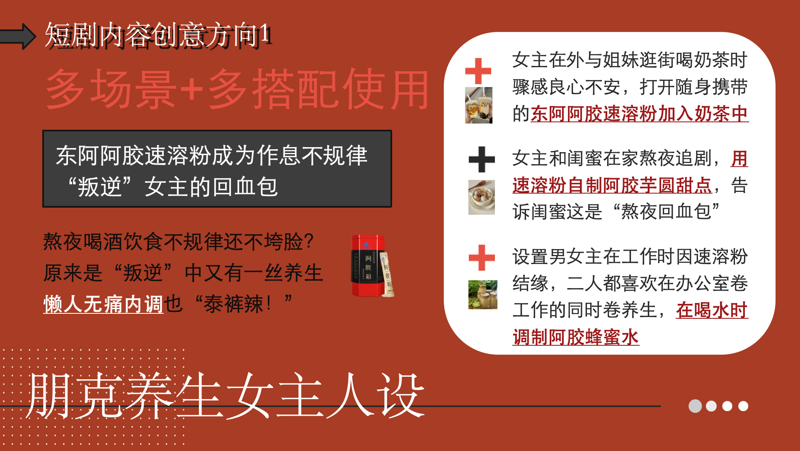
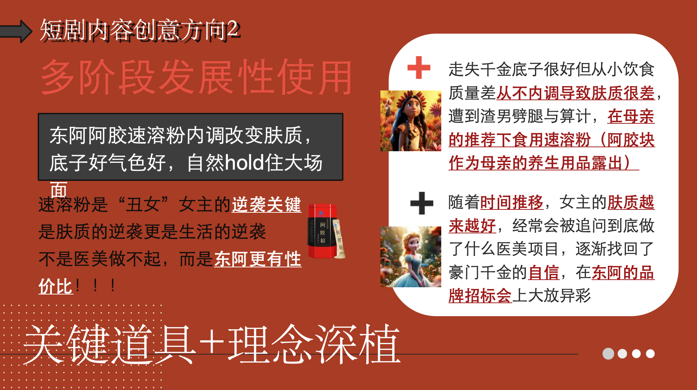
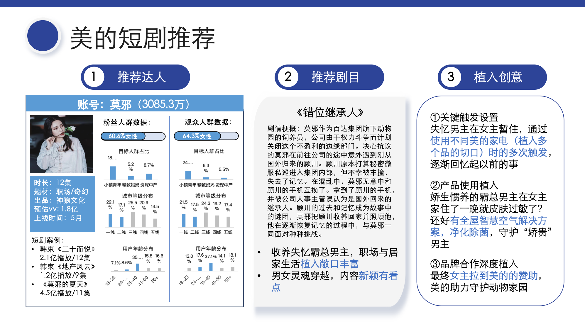
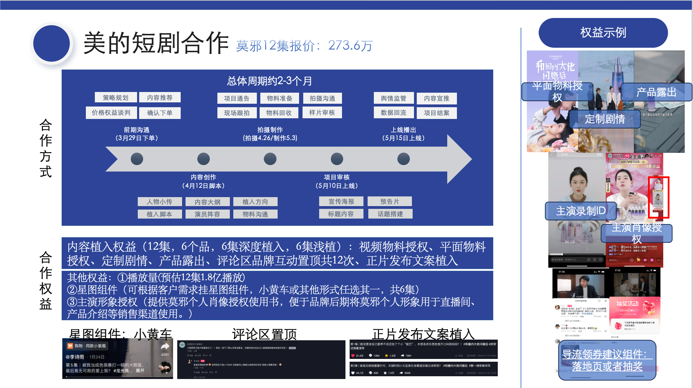
02.3 Campaign Launch & Content Performance
Showcasing the successful commercialization of branded short-form drama integration from concept development to audience engagement.
Client Adoption
Developed a branded short-form drama integration proposal that was selected and purchased by Midea for commercial production.
Content Launch
Supported the transition from creative planning to final production, with the branded drama successfully launched on short-form video platforms.
Audience Engagement
The 8-episode branded drama achieved strong audience engagement, averaging over 100K likes per episode after launch.
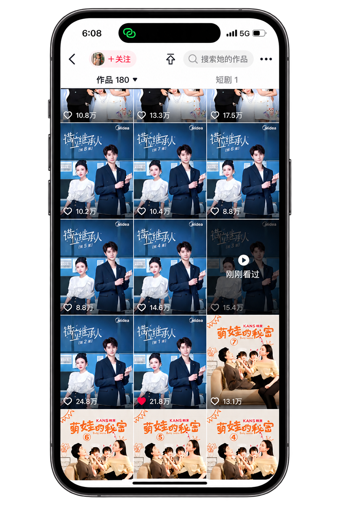
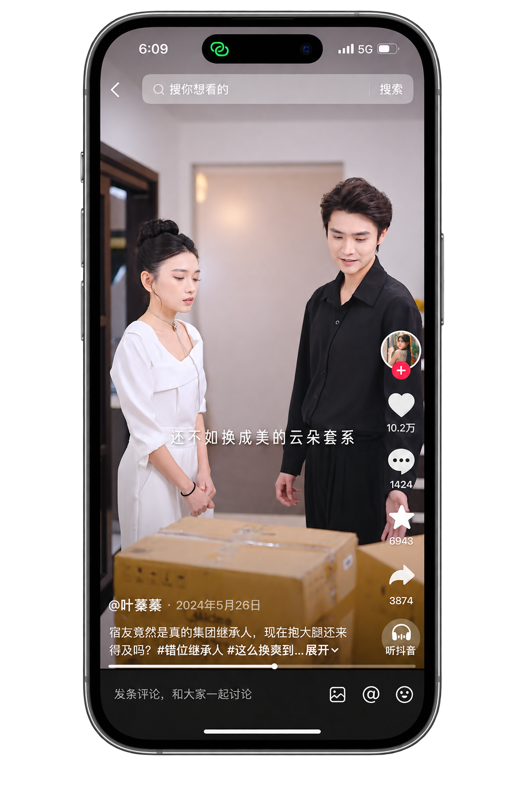
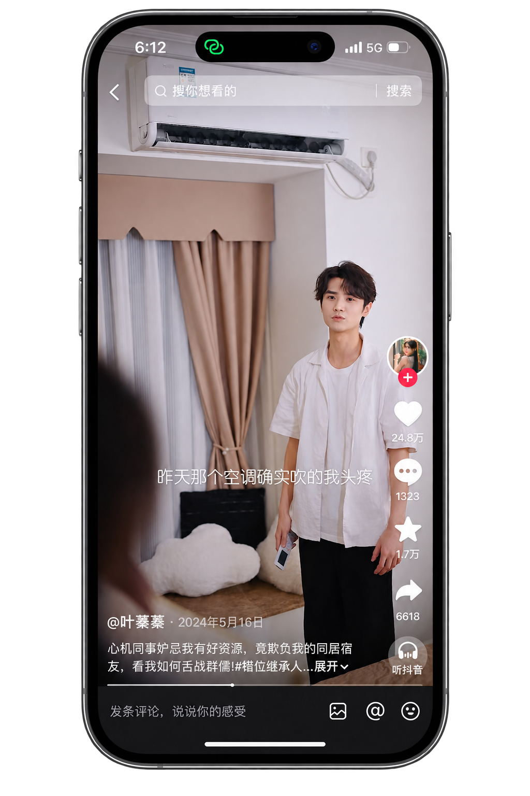